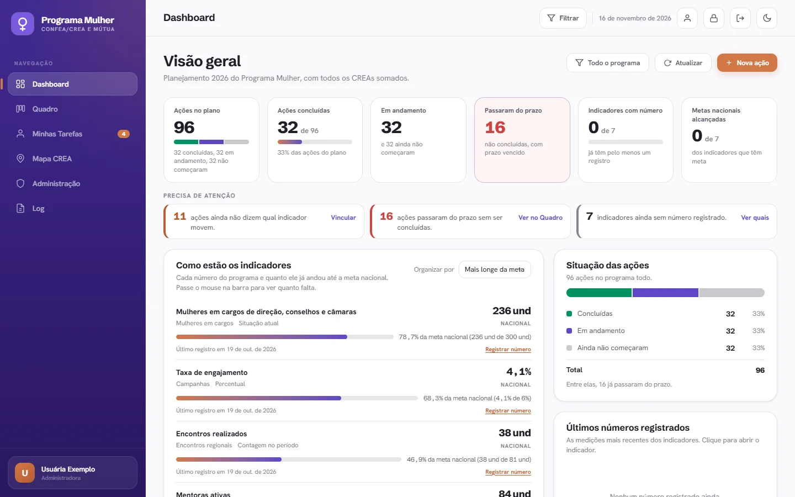
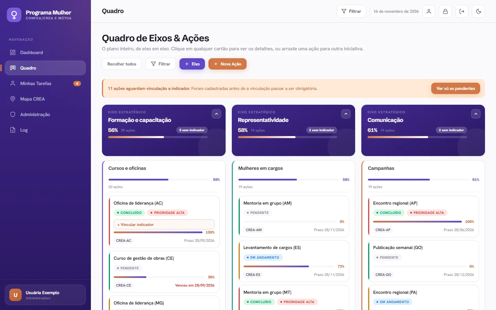
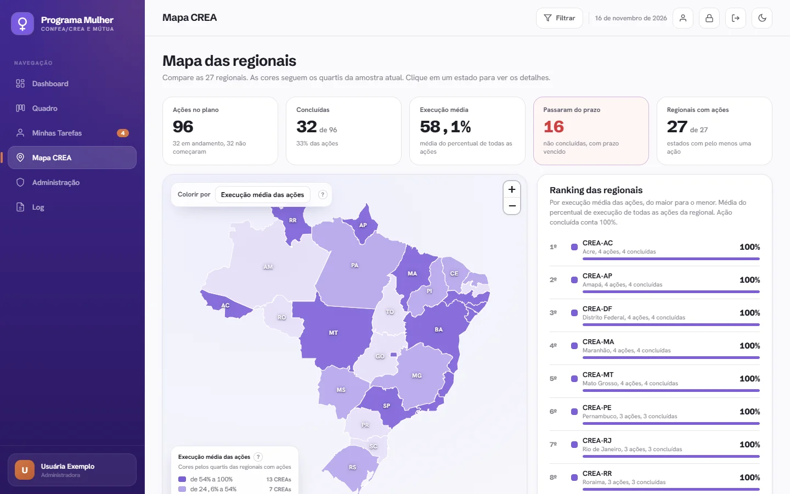
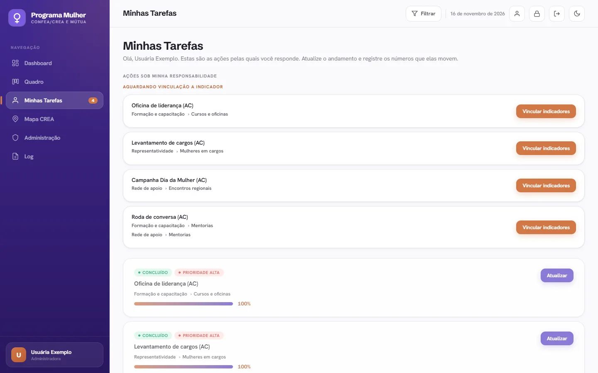
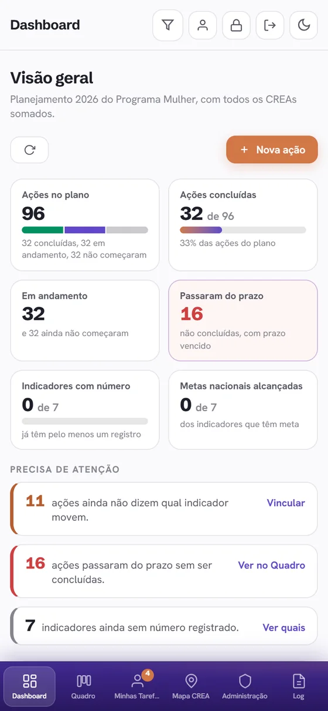

PortfólioSistemas e plataformas
Programa Mulher 2026
Painel em que os 27 Creas planejam e acompanham as ações do Programa Mulher do Sistema Confea/Crea e Mútua.
- Instituição
- CONFEA
- Usuários
- 27 Creas
- Versões
- 13
- Acesso
- Login e perfis por Crea
Telas
Painel real com respostas do banco trocadas por dados fictícios.








No celular
Painel real com respostas do banco trocadas por dados fictícios.


Organização do plano
Plano
Eixotema do plano
Desdobramento
Iniciativapode atender a mais de um eixo
Execução
AçãoCrea, responsável, prazo, prioridade, percentual
Medição
Indicadormeta por Crea e meta nacional
Mediçãonúmero com data, origem e ação
A meta nacional é a soma das metas dos Creas, ou a média nos indicadores em percentual.
Fluxo de uma ação
Cadastro
Nova açãoiniciativa e indicadores obrigatórios
Atribuição
Aceitea responsável aceita ou recusa com justificativa
Andamento
Pendente0%
Em andamentopercentual e observação
Atrasadaprazo vencido
Fim
Concluída100%
Exclusãopedido com justificativa e aprovação
Tipos de indicador
4 tipos. Situação atual e percentual medem o avanço a partir do valor de janeiro.
- Contagem no períodoCada Crea informa o que fez desde o último registro; o sistema soma.
- Situação atualCada Crea informa quantos existem hoje; o número troca o anterior.
- PercentualValor de 0 a 100, comparado com o ponto de partida de janeiro.
- Leitura nacionalUm número do país inteiro, registrado pela coordenação.
Funcionalidades
- Unidades27 Creas e o CONFEA como 28ª unidade, cada um com login e perfil.
- MetasMeta por Crea e meta nacional calculada.
- Mapa6 métricas: execução média, conclusão, concluídas, número de ações, atrasadas e metas.
- AtençãoAções sem indicador, prazos vencidos e indicadores sem número.
- AjudaTexto com exemplo em cada campo do formulário.
- AdministraçãoUsuárias, exclusões com aprovação e registro de alterações.
Tecnologias
PythonAlpine.jsSupabaseIBGE